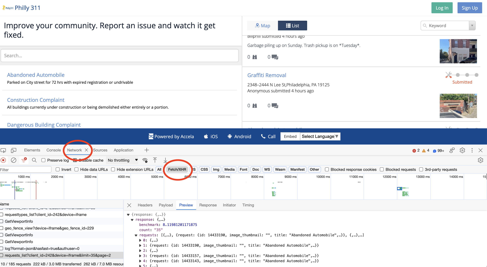
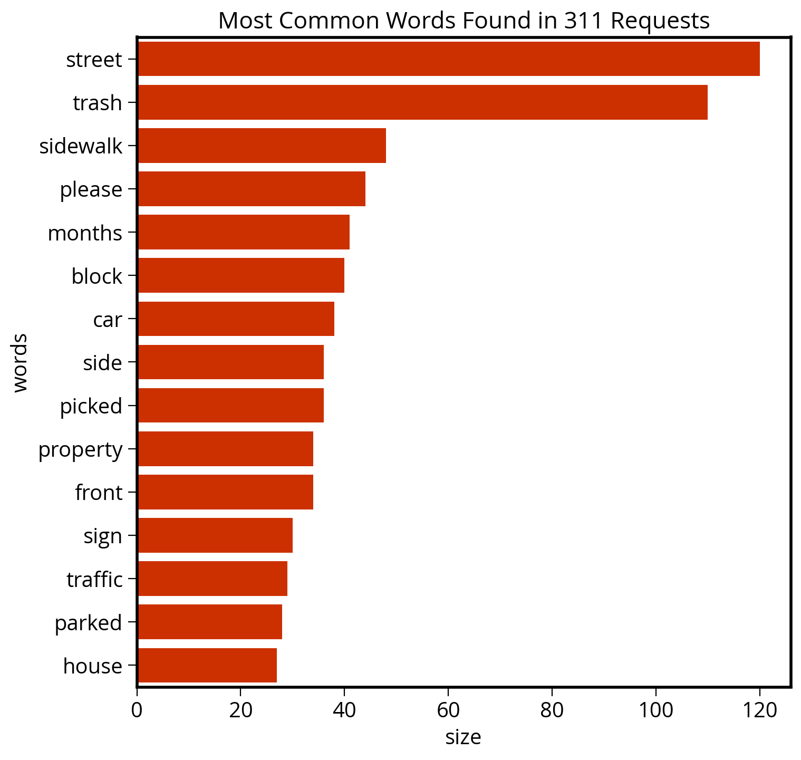
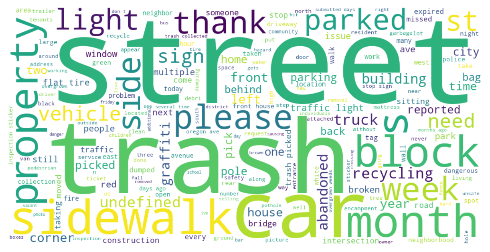
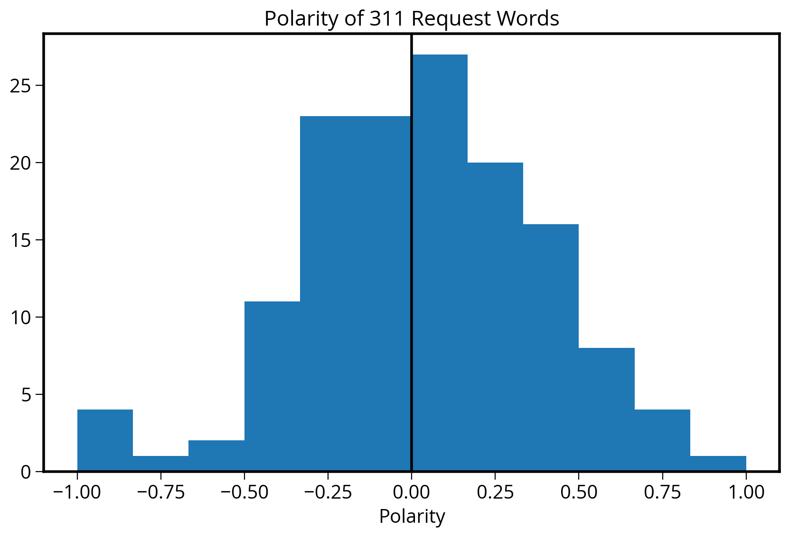
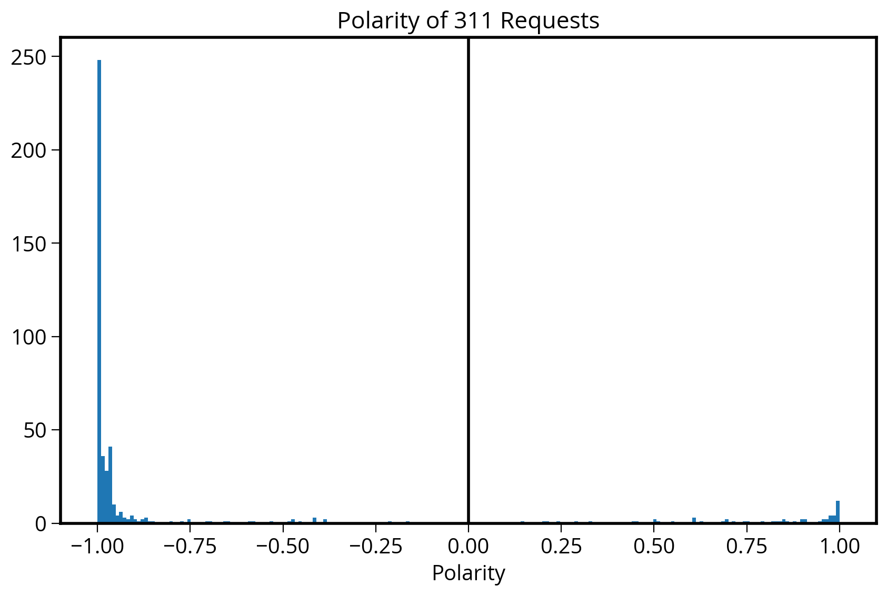
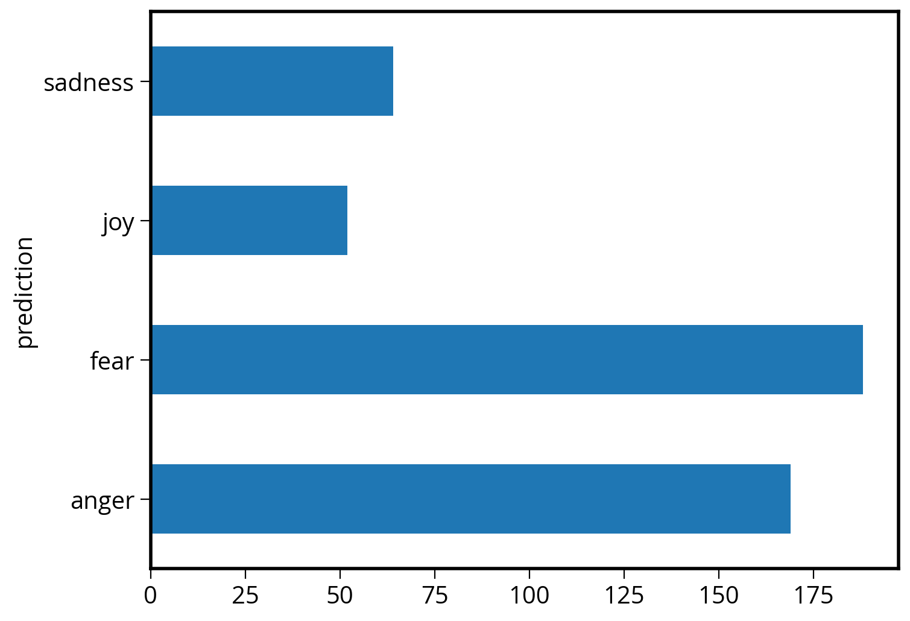
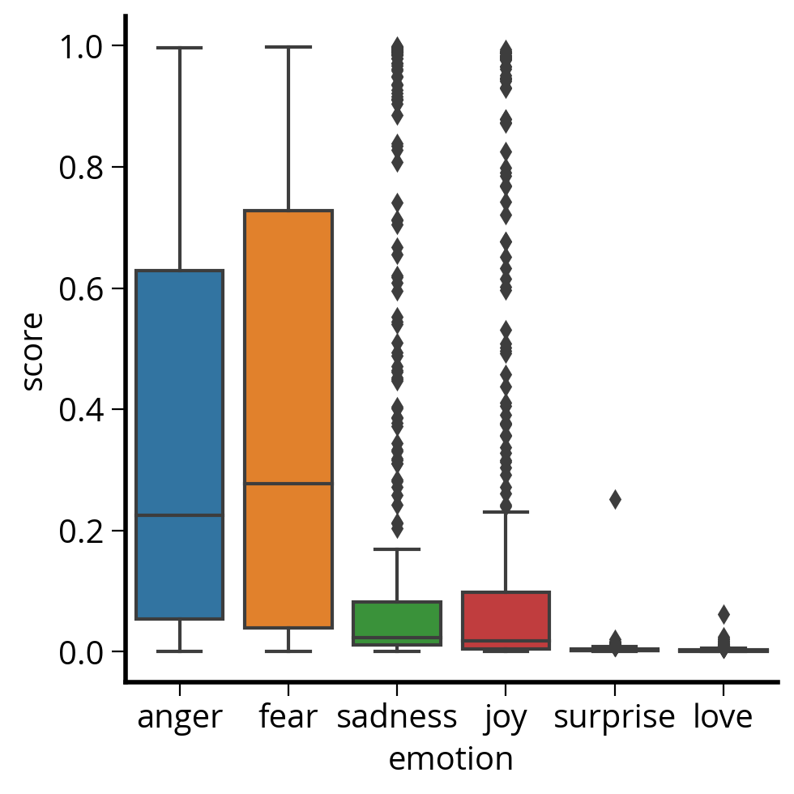
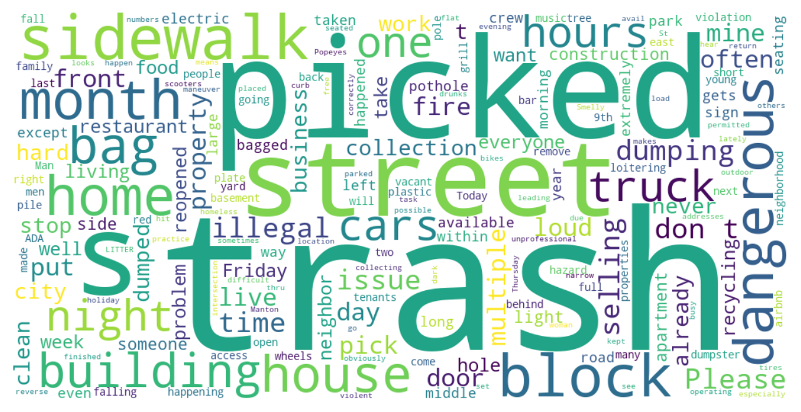
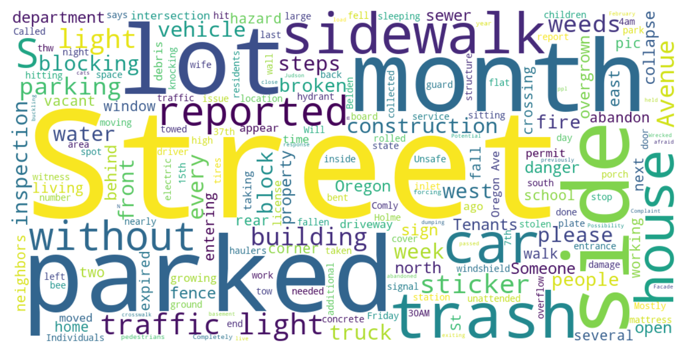
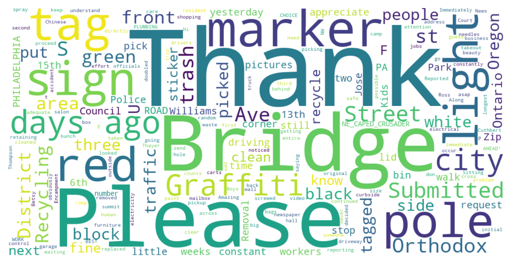

# Data analysis
# APIs
import cenpy
import geopandas as gpd
import holoviews as hv
import hvplot.pandas
import numpy as np
import pandas as pd
import pygris
import requests
# Plotting
import seaborn as sns
from matplotlib import pyplot as pltWeek 7B
Getting Data, Part 2: Working with APIs
- Section 401
- Wednesday, October 18, 2023
Week #7 Agenda
Last time:
- Introduction to APIs
- Pulling census data and shape files using Python
Today:
- Exercise: Lead poisoning in Philadelphia
- Natural language processing via Philly’s 311 API
- Word frequencies
- Sentiment analysis
pd.options.display.max_columns = 999
pd.options.display.max_colwidth = NoneExercise: lead poisoning in Philadelphia
Let’s use demographic census data in Philadelphia by census tract and compare to a dataset of childhood lead poisoning. For this exercise, you’ll pull data from the Census API and the CARTO API.
Step 1. Download the demographic data for Philadelphia
- We are going to be examining the percent of the population that identifies as black in each census tract, so we will need:
- Total population: ‘B03002_001E’
- Non-Hispanic, Black population: ‘B03002_004E’
- Use data from the 2021 5-year ACS
- You’ll want to use the state –> county –> tract hierarchy , using the
*operator to get all tracts in Philadelphia county
- Remember PA has a FIPS code of “42” and Philadelphia County is “101”
Step 2. Download and merge in the census tract geometries
Use the pygris.tracts() function!
Step 3. Calculate the black percentage
Add a new column to your data called percent_black.
Important: Make sure you convert the data to floats!
Step 4. Query the CARTO API to get the childhood lead levels by census tract
- The API documentation for this data is here: https://cityofphiladelphia.github.io/carto-api-explorer/#child_blood_lead_levels_by_ct
- You’ll need the API endpoint for CARTO and the name of the table to build your
qrequest parameter
Step 5. Remove census tracts with missing lead measurements
See the .dropna() function and the subset= keyword.
Step 6. Merge the demographic and lead level data frames
- From the lead data, we only need the ‘census_tract’ and ‘perc_5plus’. Before merging, trim your data to only these columns.
- You can perform the merge by comparing the
census_tractandGEOIDfields - Remember: when merging, the left data frame should be the GeoDataFrame — use
GeoDataFrame.merge(...)
Step 7. Trim to the columns we need
We only need the ‘geometry’, ‘percent_black’, and ‘perc_5plus’, and ‘NAME_x’ columns
Step 8. Plot the results
Make two plots:
- A two panel, side-by-side chart showing a choropleth of the lead levels and the percent black
- A scatter plot showing the percentage
You can make these using hvplot or geopandas/matplotlib — whichever you prefer!
Step 9 (Challenge): Use seaborn to plot a 2d density map
In the previous plots, it’s still hard to see the relationship. Use the kdeplot() function in seaborn to better visualize the relationship.
You will need to remove any NaN entries first.
You should see two peaks in the distribution clearly now!
API Example #2: Philly 311
Today, we’ll pull data using the API for the Philly 311 system, available at: https://iframe.publicstuff.com/#?client_id=242
We saw this site previously when we talked about web scraping last week:

Let’s take another look at the address where the site is pulling its data from:
https://vc0.publicstuff.com/api/2.0/requests_list?client_id=242&device=iframe&limit=35&page=1
This is just an API request! It’s an example of a non-public, internal API, but we can reverse-engineer it to extract the data we want!
Break it down into it’s component parts:
- Base URL: https://vc0.publicstuff.com/api/2.0/requests_list
- Query parameters: client_id, device, limit, page
It looks likes “client_id” identifies data for the City of Philadelphia, which is definitely a required parameter. Otherwise, the other parameters seem optional, returning the requests on a certain device and viewing page.
Let’s test it out. We’ll grab 2 requests from the first page:
r = requests.get(
"https://vc0.publicstuff.com/api/2.0/requests_list",
params={"client_id": 242, "page": 1, "limit": 2},
)
json = r.json()
json{'response': {'requests': [{'request': {'primary_attachment': {'id': 4616237,
'extension': 'jpg',
'content_type': 'image/jpeg',
'url': 'https://d17aqltn7cihbm.cloudfront.net/uploads/572ba867a308f995b8cd6303b1713988',
'versions': {'small': 'https://d17aqltn7cihbm.cloudfront.net/uploads/small_572ba867a308f995b8cd6303b1713988',
'medium': 'https://d17aqltn7cihbm.cloudfront.net/uploads/medium_572ba867a308f995b8cd6303b1713988',
'large': 'https://d17aqltn7cihbm.cloudfront.net/uploads/large_572ba867a308f995b8cd6303b1713988'}},
'id': 14494693,
'image_thumbnail': 'https://d17aqltn7cihbm.cloudfront.net/uploads/small_572ba867a308f995b8cd6303b1713988',
'title': 'Dangerous Sidewalk',
'description': None,
'status': 'submitted',
'address': '2700–2710 E Sergeant St,Philadelphia, PA 19125',
'location': 'Philadelphia, Pennsylvania',
'zipcode': '19125',
'foreign_id': '16303390',
'date_created': 1697398345,
'count_comments': 0,
'count_followers': 0,
'count_supporters': 0,
'lat': 39.976053,
'lon': -75.117885,
'user_follows': 0,
'user_comments': 0,
'user_request': 0,
'rank': '1',
'user': 'stewart08'}},
{'request': {'primary_attachment': {'id': 4616232,
'extension': 'jpg',
'content_type': 'image/jpeg',
'url': 'https://d17aqltn7cihbm.cloudfront.net/uploads/4a5077de08d8625ed19951fde045f40e',
'versions': {'small': 'https://d17aqltn7cihbm.cloudfront.net/uploads/small_4a5077de08d8625ed19951fde045f40e',
'medium': 'https://d17aqltn7cihbm.cloudfront.net/uploads/medium_4a5077de08d8625ed19951fde045f40e',
'large': 'https://d17aqltn7cihbm.cloudfront.net/uploads/large_4a5077de08d8625ed19951fde045f40e'}},
'id': 14494686,
'image_thumbnail': 'https://d17aqltn7cihbm.cloudfront.net/uploads/small_4a5077de08d8625ed19951fde045f40e',
'title': 'Abandoned Automobile',
'description': None,
'status': 'submitted',
'address': 'I-95 S,Philadelphia, PA 19125',
'location': 'Philadelphia, Pennsylvania',
'zipcode': '19125',
'foreign_id': '16303389',
'date_created': 1697398188,
'count_comments': 0,
'count_followers': 0,
'count_supporters': 0,
'lat': 39.975304,
'lon': -75.116556,
'user_follows': 0,
'user_comments': 0,
'user_request': 0,
'rank': '1',
'user': ''}}],
'count': '2',
'benchmark': 6.761265993118286,
'status': {'type': 'success',
'message': 'Success',
'code': 200,
'code_message': 'Ok'}}}Now we need to understand the structure of the response. First, access the list of requests:
request_list = json["response"]["requests"]
request_list[{'request': {'primary_attachment': {'id': 4616237,
'extension': 'jpg',
'content_type': 'image/jpeg',
'url': 'https://d17aqltn7cihbm.cloudfront.net/uploads/572ba867a308f995b8cd6303b1713988',
'versions': {'small': 'https://d17aqltn7cihbm.cloudfront.net/uploads/small_572ba867a308f995b8cd6303b1713988',
'medium': 'https://d17aqltn7cihbm.cloudfront.net/uploads/medium_572ba867a308f995b8cd6303b1713988',
'large': 'https://d17aqltn7cihbm.cloudfront.net/uploads/large_572ba867a308f995b8cd6303b1713988'}},
'id': 14494693,
'image_thumbnail': 'https://d17aqltn7cihbm.cloudfront.net/uploads/small_572ba867a308f995b8cd6303b1713988',
'title': 'Dangerous Sidewalk',
'description': None,
'status': 'submitted',
'address': '2700–2710 E Sergeant St,Philadelphia, PA 19125',
'location': 'Philadelphia, Pennsylvania',
'zipcode': '19125',
'foreign_id': '16303390',
'date_created': 1697398345,
'count_comments': 0,
'count_followers': 0,
'count_supporters': 0,
'lat': 39.976053,
'lon': -75.117885,
'user_follows': 0,
'user_comments': 0,
'user_request': 0,
'rank': '1',
'user': 'stewart08'}},
{'request': {'primary_attachment': {'id': 4616232,
'extension': 'jpg',
'content_type': 'image/jpeg',
'url': 'https://d17aqltn7cihbm.cloudfront.net/uploads/4a5077de08d8625ed19951fde045f40e',
'versions': {'small': 'https://d17aqltn7cihbm.cloudfront.net/uploads/small_4a5077de08d8625ed19951fde045f40e',
'medium': 'https://d17aqltn7cihbm.cloudfront.net/uploads/medium_4a5077de08d8625ed19951fde045f40e',
'large': 'https://d17aqltn7cihbm.cloudfront.net/uploads/large_4a5077de08d8625ed19951fde045f40e'}},
'id': 14494686,
'image_thumbnail': 'https://d17aqltn7cihbm.cloudfront.net/uploads/small_4a5077de08d8625ed19951fde045f40e',
'title': 'Abandoned Automobile',
'description': None,
'status': 'submitted',
'address': 'I-95 S,Philadelphia, PA 19125',
'location': 'Philadelphia, Pennsylvania',
'zipcode': '19125',
'foreign_id': '16303389',
'date_created': 1697398188,
'count_comments': 0,
'count_followers': 0,
'count_supporters': 0,
'lat': 39.975304,
'lon': -75.116556,
'user_follows': 0,
'user_comments': 0,
'user_request': 0,
'rank': '1',
'user': ''}}]We need to extract out the “request” key of each list entry. Let’s do that and create a DataFrame:
data = pd.DataFrame([r["request"] for r in request_list])data.head()| primary_attachment | id | image_thumbnail | title | description | status | address | location | zipcode | foreign_id | date_created | count_comments | count_followers | count_supporters | lat | lon | user_follows | user_comments | user_request | rank | user | |
|---|---|---|---|---|---|---|---|---|---|---|---|---|---|---|---|---|---|---|---|---|---|
| 0 | {'id': 4616237, 'extension': 'jpg', 'content_t... | 14494693 | https://d17aqltn7cihbm.cloudfront.net/uploads/... | Dangerous Sidewalk | None | submitted | 2700–2710 E Sergeant St,Philadelphia, PA 19125 | Philadelphia, Pennsylvania | 19125 | 16303390 | 1697398345 | 0 | 0 | 0 | 39.976053 | -75.117885 | 0 | 0 | 0 | 1 | stewart08 |
| 1 | {'id': 4616232, 'extension': 'jpg', 'content_t... | 14494686 | https://d17aqltn7cihbm.cloudfront.net/uploads/... | Abandoned Automobile | None | submitted | I-95 S,Philadelphia, PA 19125 | Philadelphia, Pennsylvania | 19125 | 16303389 | 1697398188 | 0 | 0 | 0 | 39.975304 | -75.116556 | 0 | 0 | 0 | 1 |
Success! But we want to build up a larger dataset…let’s pull data for the first 3 pages of data. This will take a minute or two…
# Store the data we request
data = []
# Total number of pages
total_pages = 3
# Loop over each page
for page_num in range(1, total_pages + 1):
# Print out the page number
print(f"Getting data for page #{page_num}...")
# Make the request
r = requests.get(
"https://vc0.publicstuff.com/api/2.0/requests_list",
params={
"client_id": 242, # Unique identifier for Philadelphia
"page": page_num, # What page of data to pull
"limit": 200, # How many rows per page
},
)
# Get the json
d = r.json()
# Add the new data to our list and save
data = data + [r["request"] for r in d["response"]["requests"]]
# Create a dataframe
data = pd.DataFrame(data)Getting data for page #1...
Getting data for page #2...
Getting data for page #3...len(data)600data.head()| id | image_thumbnail | title | description | status | address | location | zipcode | foreign_id | date_created | count_comments | count_followers | count_supporters | lat | lon | user_follows | user_comments | user_request | rank | user | primary_attachment | |
|---|---|---|---|---|---|---|---|---|---|---|---|---|---|---|---|---|---|---|---|---|---|
| 0 | 14494934 | Rubbish Collection | The entire block of 900 N Randolph had no tras... | submitted | 920 N Randolph St,Philadelphia, PA 19123 | Philadelphia, Pennsylvania | 19123 | 16303417 | 1697406040 | 0 | 0 | 0 | 39.967362 | -75.146471 | 0 | 0 | 0 | 1 | nxnw450 | NaN | |
| 1 | 14494928 | https://d17aqltn7cihbm.cloudfront.net/uploads/... | Illegal Dumping | The property is a triplex that doubles as a ai... | submitted | 205 N 63rd St, Philadelphia, PA 19139, USA | None | 16303415 | 1697405919 | 0 | 0 | 0 | 39.965960 | -75.245815 | 0 | 0 | 0 | 1 | Staceymccoyn | {'id': 4616349, 'extension': 'jpg', 'content_t... | |
| 2 | 14494918 | https://d17aqltn7cihbm.cloudfront.net/uploads/... | Illegal Dumping | Bagged trash and construction waste next to road | submitted | 7341–7345 Cresheim Rd,Philadelphia, PA 19119 | Philadelphia, Pennsylvania | 19119 | 16303414 | 1697405620 | 0 | 0 | 0 | 40.058386 | -75.196334 | 0 | 0 | 0 | 1 | juliaeastwood | {'id': 4616346, 'extension': 'jpg', 'content_t... |
| 3 | 14494897 | Recycling Collection | Recycling wasnt picked up on 1400 block of Mar... | in progress | 1415 Marlborough St, Philadelphia, PA 19125, USA | None | 16303412 | 1697404454 | 1 | 0 | 0 | 39.973031 | -75.133405 | 0 | 0 | 0 | 1 | NaN | |||
| 4 | 14494857 | Abandoned Automobile | Chrysler caprice classic brown\nJxe 6446 | submitted | 2400 Christian St,Philadelphia, PA 19146 | Philadelphia, Pennsylvania | 19146 | 16303408 | 1697403318 | 0 | 0 | 0 | 39.942072 | -75.182950 | 0 | 0 | 0 | 1 | jonathanklein | NaN |
Let’s focus on the “description” column. This is the narrative text that the user inputs when entering a 311 request, and it is an example of semi-structured data. For the rest of today, we’ll focus on how to extract information from semi-structured data.
Semi-structured data
Data that contains some elements that cannot be easily consumed by computers
Examples: human-readable text, audio, images, etc
Key challenges
- Text mining: analyzing blocks of text to extract the relevant pieces of information
- Natural language processing (NLP): programming computers to process and analyze human languages
- Sentiment analysis: analyzing blocks of text to derive the attitude or emotional state of the person
Note
Twitter is one of the main API examples of semi-structured data, but since Elon Musk overhauled the API access, it’s become prohibitively expensive to access (RIP 💀)
To get started, let’s remove any requests where the description is missing:
data = data.dropna(subset=["description"])
data_final = data.loc[data["description"] != ""]# Strip out spaces and convert to a list
descriptions = data_final["description"].str.strip().tolist()
descriptions[:10]['The entire block of 900 N Randolph had no trash collection on Saturday.',
'The property is a triplex that doubles as a airbnb. They put garbage bags out everyday not on trash day.',
'Bagged trash and construction waste next to road',
'Recycling wasnt picked up on 1400 block of Marlborough',
'Chrysler caprice classic brown\nJxe 6446',
'Encampment in the rear of 2033 S, Broad (on Watts street). Area was fenced off. Fences have now been broken into',
"2840 N Judson St porch is danger of collapse, held up by a board. ppl in the home dumping construction trash on the corner. Neighbors homes next door is in danger when the porch collapse too. couldn't load pic.",
'No parking sign istalled but in the wrong place. Fire, rescue, and police as well as trash and recycling cannot pass due to the placement. Please we need this corrected asap',
'People have broken into the fence behind vacant building and set up an encampment. The high school is literally across the street.',
'The patch has sunken and there is an additional deep pothole about ten feet (near intersection) towards Main Street.']Use case #1: calculating word frequencies
An example of text mining
Text mining and dealing with messy data
Some steps to clean up our text data:
- Break strings into words
- Remove capitalization
- Remove stop words
- Remove punctuation
1. Break strings into words
Use the .split() command to break a string into words by splitting on spaces.
example_string = "This is an Example"
example_string.split()['This', 'is', 'an', 'Example']descriptions_words = [desc.split() for desc in descriptions]descriptions_words[0]['The',
'entire',
'block',
'of',
'900',
'N',
'Randolph',
'had',
'no',
'trash',
'collection',
'on',
'Saturday.']This is a list of lists, e.g., the first element is a list of words. Let’s flatten this into a list of just words:
descriptions_words_flat = []
for list_of_words in descriptions_words:
for word in list_of_words:
descriptions_words_flat.append(word)descriptions_words_flat[:10]['The', 'entire', 'block', 'of', '900', 'N', 'Randolph', 'had', 'no', 'trash']2. Convert all words to lower case
Use .lower() makes all words lower cased
descriptions_words_lower = [word.lower() for word in descriptions_words_flat]descriptions_words_lower[:10]['the', 'entire', 'block', 'of', '900', 'n', 'randolph', 'had', 'no', 'trash']len(descriptions_words_lower)96313. Remove stop words
Common words that do not carry much significance and are often ignored in text analysis.
We can use the nltk package.
The “Natural Language Toolkit” https://www.nltk.org/
Import and download the stop words:
import nltk
nltk.download("stopwords");[nltk_data] Downloading package stopwords to /Users/nhand/nltk_data...
[nltk_data] Package stopwords is already up-to-date!Get the list of common stop words:
stop_words = list(set(nltk.corpus.stopwords.words("english")))
stop_words[:10]["you've",
'no',
're',
'i',
'ourselves',
'aren',
'after',
'his',
'who',
"mustn't"]len(stop_words)179descriptions_no_stop = [word for word in descriptions_words_lower if word not in stop_words]len(descriptions_no_stop)56114. Remove punctuation
Get the list of common punctuation:
import stringpunctuation = list(string.punctuation)punctuation[:5]['!', '"', '#', '$', '%']Remove punctuation from words:
descriptions_final = []
# Loop over all words
for word in descriptions_no_stop:
# Remove any punctuation from the words
for p in punctuation:
word = word.replace(p, "")
# Save it if the string is not empty
if word:
descriptions_final.append(word)Convert to a Dataframe with one column:
words = pd.DataFrame({"words": descriptions_final})words.head()| words | |
|---|---|
| 0 | entire |
| 1 | block |
| 2 | 900 |
| 3 | n |
| 4 | randolph |
Calculate the word frequencies
Use a pandas groupby and sort to put in descending order:
N = words.groupby("words", as_index=False).size().sort_values("size", ascending=False, ignore_index=True)The top 15 words by frequency:
top15 = N.head(15)
top15| words | size | |
|---|---|---|
| 0 | street | 120 |
| 1 | trash | 110 |
| 2 | sidewalk | 48 |
| 3 | please | 44 |
| 4 | months | 41 |
| 5 | block | 40 |
| 6 | car | 38 |
| 7 | side | 36 |
| 8 | picked | 36 |
| 9 | property | 34 |
| 10 | front | 34 |
| 11 | sign | 30 |
| 12 | traffic | 29 |
| 13 | parked | 28 |
| 14 | house | 27 |
Plot the frequencies
Use seaborn to plot our DataFrame of word counts…
fig, ax = plt.subplots(figsize=(8, 8))
# Plot horizontal bar graph
sns.barplot(
y="words",
x="size",
data=top15,
ax=ax,
color="#cc3000",
saturation=1.0,
)
ax.set_title("Most Common Words Found in 311 Requests", fontsize=16);
Takeaway: Philly cares about trash! They don’t call it Filthadelphia for nothing…
Now, let’s visualize with a word cloud
Use the wordcloud package to make a simple word cloud of the word frequencies.
Note
We’ll need to pass a single string to the WordCloud function. We can combine a list of strings by using the join function and specifying the join separator to be a space (” “)
> strings = ["this", "is", "an", "example"]
> combined_string = " ".join(strings)
> combined_string
'this is an example'from wordcloud import WordCloud# Create a word cloud object
wc = WordCloud(background_color="white", width=1000, height=500, colormap="viridis")
# Create a single string from all of our descriptions
text = " ".join(descriptions_final)
# Generate the image
img = wc.generate(text)
# The matplotlib fig/ax
fig, ax = plt.subplots()
# Show the image
ax.imshow(img, interpolation="bilinear")
# Format
ax.set_axis_off()
plt.show();
Use case #2: sentiment analysis
The goal of a sentiment analysis is to determine the attitude or emotional state of the person who wrote a piece of text. It is often used by brands to evaluate public opinion about a product.
The goal
Determine the “sentiment” of every word in the English language
The hard way
Train a machine learning algorithm to classify words as positive vs. negative, given an input training sample of words.
The easy way
Luckily, this is a very common task in NLP and there are several packages available that have done the hard work for you.
They provide out-of-the-box sentiment analysis using pre-trained machine learning algorithms.
The textblob package
First, let’s try out a package called textblob. Textblob can calculate the “polarity” of words, from negative -1 to postive +1.
It’s algorithm is not particularly sophisticated (as we will see). It was trained on IMDB movie reviews and uses a dictionary mapping of adjectives to sentiment values. So, it knows about a set of adjectives and an approximate polarity for those words.
Let’s try it out on the words from the 311 requests
import textblobFirst, copy our “words” dataframe and drop any duplicate words. We’ll try to calculate the sentiment for each word.
sentiment = words.copy().drop_duplicates(subset=['words'])sentiment.head()| words | |
|---|---|
| 0 | entire |
| 1 | block |
| 2 | 900 |
| 3 | n |
| 4 | randolph |
Now, create our “text blob” objects:
blobs = [textblob.TextBlob(word) for word in sentiment['words']]Now use the “.polarity” attribute to calculate the sentiment:
sentiment["polarity"] = [blob.polarity for blob in blobs]sentiment.head(10)| words | polarity | |
|---|---|---|
| 0 | entire | 0.0 |
| 1 | block | 0.0 |
| 2 | 900 | 0.0 |
| 3 | n | 0.0 |
| 4 | randolph | 0.0 |
| 5 | trash | 0.0 |
| 6 | collection | 0.0 |
| 7 | saturday | 0.0 |
| 8 | property | 0.0 |
| 9 | triplex | 0.0 |
Most of these words are zero!
(sentiment['polarity'] == 0).sum()1738len(sentiment)1878Why did this happen?
Because the universe of words that TextBlob knows about is pretty small! Mostly confined to common adjectives/adverbs that appeared in its IMDB review dataset.
Let’s take a look at the words with nonzero polarity:
sentiment_nonzero = sentiment.query("polarity != 0")What are the top 15 most positive words?
sentiment_nonzero.sort_values("polarity", ascending=False, ignore_index=True).head(15)| words | polarity | |
|---|---|---|
| 0 | best | 1.000000 |
| 1 | experienced | 0.800000 |
| 2 | fly | 0.800000 |
| 3 | pleasant | 0.733333 |
| 4 | good | 0.700000 |
| 5 | amazing | 0.600000 |
| 6 | hazardous | 0.600000 |
| 7 | rose | 0.600000 |
| 8 | safe | 0.500000 |
| 9 | top | 0.500000 |
| 10 | appealing | 0.500000 |
| 11 | many | 0.500000 |
| 12 | mostly | 0.500000 |
| 13 | becoming | 0.450000 |
| 14 | fine | 0.416667 |
What are the top 15 most negative words?
sentiment_nonzero.sort_values("polarity", ascending=True, ignore_index=True).head(15)| words | polarity | |
|---|---|---|
| 0 | outrageous | -1.0 |
| 1 | worst | -1.0 |
| 2 | horrible | -1.0 |
| 3 | terrible | -1.0 |
| 4 | violent | -0.8 |
| 5 | afraid | -0.6 |
| 6 | dangerous | -0.6 |
| 7 | startling | -0.5 |
| 8 | illegally | -0.5 |
| 9 | wrong | -0.5 |
| 10 | difficult | -0.5 |
| 11 | illegal | -0.5 |
| 12 | approximately | -0.4 |
| 13 | tired | -0.4 |
| 14 | dusty | -0.4 |
What about a histogram of the sentiment?
# create a figure and axes
fig, ax = plt.subplots(figsize=(10, 6))
# histogram
ax.hist(sentiment_nonzero["polarity"], bins="auto")
ax.axvline(x=0, c="k", lw=2)
# format
ax.set_xlabel("Polarity")
ax.set_title("Polarity of 311 Request Words", fontsize=16);
Hmm…this is surprising! There are many more positive words than I would have guessed!
What could be going on?
Most of the 311 requests are in fact very negative. They are mostly complaints, after all.
In the previous analysis, TextBlob only knows the sentiment for a small subset of the words. This is makes it difficult to produce a comprehensive sentiment for the entirety of the text for each 311 request. This is difficult because context really matters! Let’s see an example:
As you can see in the below example, the negation is not picked up by the algorithm:
textblob.TextBlob("Philly 311 is the best").polarity1.0textblob.TextBlob("Philly 311 is NOT the best").polarity1.0Both are marked as positive! (because of the word “best”)
Can we do better? YES!
The transformers package
The Hugging Face transformers package (documentation) provides access to state-of-the-art, pre-trained machine learning algorithms for natural language processing.
It provides access to more sophisticated machine learning models that are capable of measuring the sentiment of a piece of text using the full context of the words.
We can use the transformers pipeline() function to load and run our pre-trained models
from transformers import pipelinePositive/Negative sentiment analysis
We’ll start with a version of the DistilBERT model that has been fine-tuned on the Stanford Sentiment Treebank dataset.
For an input series of text, this model will predict the POSITIVE / NEGATIVE labels with associated confidence scores. It will tell us how likely it thinks the text is positive or negative.
Tip
For more info on sentiment analysis with the transformers package, check out this tutorial.
# The name of the model we are using
model = "distilbert-base-uncased-finetuned-sst-2-english"
# Initialize our sentiment analyzer
sentiment_classifier = pipeline(
task="sentiment-analysis", # The task we are doing
model=model, # The specific model name
top_k=None, # Predict all labels, not just top ones
tokenizer=model, # Tokenize inputs using model tokenizer
truncation=True, # Truncate text if we need to
)Now, let’s pass our original list of request descriptions to the classifier.
Note
We don’t need to do any text pre-processing here! We’ll just pass in the raw text, so no need to remove stop words, punctuation, etc.
We’re now running a much more sophisticated model, so it will take more time to execute! This will likely take 2-3 minutes to run…
%%time
scores = sentiment_classifier(descriptions)CPU times: user 22min 16s, sys: 9.98 s, total: 22min 26s
Wall time: 2min 44sWhat does the response structure look like?
For each description, we get a dictionary containing the label (POSITIVE or NEGATIVE) and the associated score:
scores[:10][[{'label': 'NEGATIVE', 'score': 0.9876556992530823},
{'label': 'POSITIVE', 'score': 0.01234432402998209}],
[{'label': 'NEGATIVE', 'score': 0.9566057920455933},
{'label': 'POSITIVE', 'score': 0.043394193053245544}],
[{'label': 'NEGATIVE', 'score': 0.9991108775138855},
{'label': 'POSITIVE', 'score': 0.0008890967001207173}],
[{'label': 'NEGATIVE', 'score': 0.9974349141120911},
{'label': 'POSITIVE', 'score': 0.0025651399046182632}],
[{'label': 'NEGATIVE', 'score': 0.9640655517578125},
{'label': 'POSITIVE', 'score': 0.035934410989284515}],
[{'label': 'NEGATIVE', 'score': 0.9928788542747498},
{'label': 'POSITIVE', 'score': 0.007121145259588957}],
[{'label': 'NEGATIVE', 'score': 0.9996083378791809},
{'label': 'POSITIVE', 'score': 0.00039170836680568755}],
[{'label': 'NEGATIVE', 'score': 0.9989500641822815},
{'label': 'POSITIVE', 'score': 0.0010499225463718176}],
[{'label': 'NEGATIVE', 'score': 0.9546453356742859},
{'label': 'POSITIVE', 'score': 0.04535467550158501}],
[{'label': 'NEGATIVE', 'score': 0.9982457160949707},
{'label': 'POSITIVE', 'score': 0.0017542812274768949}]]Let’s unpack this to a more useful format:
yes_no = pd.DataFrame([{d["label"]: d["score"] for d in dd} for dd in s]).assign(
text=descriptions
)yes_no.head()| NEGATIVE | POSITIVE | text | |
|---|---|---|---|
| 0 | 0.987656 | 0.012344 | The entire block of 900 N Randolph had no tras... |
| 1 | 0.956606 | 0.043394 | The property is a triplex that doubles as a ai... |
| 2 | 0.999111 | 0.000889 | Bagged trash and construction waste next to road |
| 3 | 0.997435 | 0.002565 | Recycling wasnt picked up on 1400 block of Mar... |
| 4 | 0.964066 | 0.035934 | Chrysler caprice classic brown\nJxe 6446 |
Note: The scores summed across both labels will sum up to 1.
Total sentiment calculation: We can calculate the overall score by multiplying the value for each label, e.g., (POSITIVE = +1 and NEGATIVE = -1) by the confidence score for each label. This gives an overall sentiment estimate for each piece of text:
yes_no["sentiment"] = (yes_no["POSITIVE"] * +1) + (yes_no["NEGATIVE"] * -1)yes_no.head()| NEGATIVE | POSITIVE | text | sentiment | |
|---|---|---|---|---|
| 0 | 0.987656 | 0.012344 | The entire block of 900 N Randolph had no tras... | -0.975311 |
| 1 | 0.956606 | 0.043394 | The property is a triplex that doubles as a ai... | -0.913212 |
| 2 | 0.999111 | 0.000889 | Bagged trash and construction waste next to road | -0.998222 |
| 3 | 0.997435 | 0.002565 | Recycling wasnt picked up on 1400 block of Mar... | -0.994870 |
| 4 | 0.964066 | 0.035934 | Chrysler caprice classic brown\nJxe 6446 | -0.928131 |
Question: Are most of the reviews positive or negative?
Let’s take a look at the mean and median:
yes_no['sentiment'].mean()-0.7430794623687305yes_no['sentiment'].median()-0.9914885857142508Ah! By far, most of these are negative!
Philadelphians using the 311 system appear to be very upset.
Let’s take a look at the overall histogram of sentiment too. First, we’ll need to melt this into a tidy format:
yes_no_tidy = yes_no.melt(
id_vars=["text"],
value_vars=["POSITIVE", "NEGATIVE"],
var_name="emotion",
value_name="score",
)yes_no_tidy.head()| text | emotion | score | |
|---|---|---|---|
| 0 | The entire block of 900 N Randolph had no tras... | POSITIVE | 0.012344 |
| 1 | The property is a triplex that doubles as a ai... | POSITIVE | 0.043394 |
| 2 | Bagged trash and construction waste next to road | POSITIVE | 0.000889 |
| 3 | Recycling wasnt picked up on 1400 block of Mar... | POSITIVE | 0.002565 |
| 4 | Chrysler caprice classic brown\nJxe 6446 | POSITIVE | 0.035934 |
# Create a figure and axes
fig, ax = plt.subplots(figsize=(10, 6))
# Histogram
ax.hist(total_sentiment, bins="auto")
ax.axvline(x=0, c="k", lw=2)
# Format
ax.set_xlabel("Polarity")
ax.set_title("Polarity of 311 Requests", fontsize=16);
Whoa! Very negative sentiment!
This makes much more sense than our earlier results with the Textblob package.
Let’s look at the 10 requests with the lowest sentiment scores:
yes_no.sort_values("sentiment", ascending=True).head(10)| NEGATIVE | POSITIVE | text | sentiment | |
|---|---|---|---|---|
| 117 | 0.999794 | 0.000206 | Expired tags and appears abandoned | -0.999587 |
| 253 | 0.999787 | 0.000213 | The traffic light at 13th and Oregon is stuck. | -0.999574 |
| 454 | 0.999746 | 0.000254 | Missed collection | -0.999493 |
| 128 | 0.999745 | 0.000255 | The 2nd floor of the 1155 S 9th Street moved out and they dumped their stuff on the sidewalk. | -0.999489 |
| 277 | 0.999743 | 0.000257 | The vehicle has been there for more then 2 weeks. seems to be abandoned | -0.999486 |
| 371 | 0.999742 | 0.000258 | Trash is consistently left at the entrance of Chew playground. | -0.999485 |
| 280 | 0.999740 | 0.000260 | Car has been left for months with 3 flat tires and has not been moved or anyone to repair | -0.999479 |
| 468 | 0.999738 | 0.000262 | I’ve had issues before with the trash collectors not picking up my trash but this is the worst experience. They opened a bag of my trash and dumped it into the trash can and then left the now half empty trash bag on the ground. So not only did they not take all our trash, they also opened and half emptied a bag of trash that was in our trash can and then left the opened trash in our van and strewn on the sidewalk. | -0.999476 |
| 344 | 0.999736 | 0.000264 | Food cart was dumped in the community garden | -0.999472 |
| 256 | 0.999733 | 0.000267 | ped signal malfunction | -0.999466 |
And the 10 requests with the highest sentiment:
yes_no.sort_values("sentiment", ascending=False).head(10)| NEGATIVE | POSITIVE | text | sentiment | |
|---|---|---|---|---|
| 43 | 0.000216 | 0.999784 | Graffiti and sticker on sign. Please and thank you! | 0.999567 |
| 52 | 0.000289 | 0.999711 | Graffiti on sign. Please and thank you! | 0.999422 |
| 53 | 0.000289 | 0.999711 | Graffiti on sign. Please and thank you! | 0.999422 |
| 455 | 0.000533 | 0.999467 | This is the first of three poles in front of 2531 Orthodox that have been tagged with red marker. Thank you. | 0.998935 |
| 340 | 0.001060 | 0.998940 | Encampment has doubled in size since initial reporting. Please clear the camp asap and clean up area (trash/needles/human waste/shopping carts/random furniture). Thank you! | 0.997880 |
| 443 | 0.001380 | 0.998620 | Graffiti on newspaper bin. Please and thank you! | 0.997240 |
| 77 | 0.001807 | 0.998193 | Everyone trash was picked up except mine, and my trash was at curbside on time. I live at the corner house it’s not hard to miss | 0.996387 |
| 364 | 0.001954 | 0.998046 | Big Belly overflowing | 0.996092 |
| 365 | 0.001954 | 0.998046 | Big Belly overflowing | 0.996092 |
| 147 | 0.002254 | 0.997746 | At the entrance to Magnolia Garden | 0.995491 |
Takeaway
The model is still clearly focusing on some crucial words (please, thank you = “positive”) but overall, doing a much, much better job overall of understanding the full context of the text.
Emotion sentiment analysis
The transformers package also includes pre-trained models that can predict emotion labels. As an example, let’s try out this version of the DistilBERT model that can predict the following labels for a string of text: anger, fear, sadness, joy, love, and surprise.
# The
model = "bhadresh-savani/distilbert-base-uncased-emotion"
# Initialize our sentiment analyzer
emotion_classifier = pipeline(
task="text-classification", # The task we are doing
model=model, # The specific model name
top_k=None, # Predict all labels, not just top ones
tokenizer=model, # Tokenize inputs using model tokenizer
truncation=True, # Truncate text if we need to
)Classify the 311 descriptions using our emotions model. Once again, this will likely take 2-3 minutes to run:
%%time
emotion_scores = emotion_classifier(descriptions)CPU times: user 24min 6s, sys: 9.65 s, total: 24min 16s
Wall time: 2min 57semotion_scores[0][{'label': 'anger', 'score': 0.7160319089889526},
{'label': 'fear', 'score': 0.18108969926834106},
{'label': 'sadness', 'score': 0.08944033086299896},
{'label': 'joy', 'score': 0.009873006492853165},
{'label': 'surprise', 'score': 0.0024349840823560953},
{'label': 'love', 'score': 0.0011300727492198348}]Unpack the label/score combos into a DataFrame:
emotion = pd.DataFrame(
[{d["label"]: d["score"] for d in dd} for dd in emotion_scores]
).assign(text=descriptions)emotion.head()| anger | fear | sadness | joy | surprise | love | text | |
|---|---|---|---|---|---|---|---|
| 0 | 0.716032 | 0.181090 | 0.089440 | 0.009873 | 0.002435 | 0.001130 | The entire block of 900 N Randolph had no trash collection on Saturday. |
| 1 | 0.960171 | 0.012939 | 0.015907 | 0.009602 | 0.000799 | 0.000582 | The property is a triplex that doubles as a airbnb. They put garbage bags out everyday not on trash day. |
| 2 | 0.818394 | 0.150760 | 0.022973 | 0.005217 | 0.001567 | 0.001091 | Bagged trash and construction waste next to road |
| 3 | 0.829894 | 0.053235 | 0.024447 | 0.088462 | 0.002535 | 0.001426 | Recycling wasnt picked up on 1400 block of Marlborough |
| 4 | 0.096447 | 0.072743 | 0.044335 | 0.768291 | 0.009970 | 0.008215 | Chrysler caprice classic brown\nJxe 6446 |
Now, let’s calculate the predicted label for each text. This is the label with the highest score for each text.
emotion_labels = ["anger", "fear", "sadness", "joy", "surprise", "love"]Use the idxmax() function to find the column with the maximum value for each row:
emotion[emotion_labels].idxmax(axis=1)0 anger
1 anger
2 anger
3 anger
4 joy
...
468 sadness
469 anger
470 fear
471 anger
472 anger
Length: 473, dtype: objectemotion['prediction'] = emotion[emotion_labels].idxmax(axis=1)emotion.head()| anger | fear | sadness | joy | surprise | love | text | prediction | |
|---|---|---|---|---|---|---|---|---|
| 0 | 0.716032 | 0.181090 | 0.089440 | 0.009873 | 0.002435 | 0.001130 | The entire block of 900 N Randolph had no trash collection on Saturday. | anger |
| 1 | 0.960171 | 0.012939 | 0.015907 | 0.009602 | 0.000799 | 0.000582 | The property is a triplex that doubles as a airbnb. They put garbage bags out everyday not on trash day. | anger |
| 2 | 0.818394 | 0.150760 | 0.022973 | 0.005217 | 0.001567 | 0.001091 | Bagged trash and construction waste next to road | anger |
| 3 | 0.829894 | 0.053235 | 0.024447 | 0.088462 | 0.002535 | 0.001426 | Recycling wasnt picked up on 1400 block of Marlborough | anger |
| 4 | 0.096447 | 0.072743 | 0.044335 | 0.768291 | 0.009970 | 0.008215 | Chrysler caprice classic brown\nJxe 6446 | joy |
What’s the breakdown across the predicted labels?
emotion.groupby("prediction").size().plot(kind='barh');
Takeaway: Most descriptions are classified as “fear” or “anger”
How about visualizing the full distribution of scores across all emotions?
Let’s get a tidy version for analysis:
emotion_tidy = emotion.melt(
id_vars=["text"], value_vars=emotion_labels, var_name="emotion", value_name="score"
)emotion_tidy.head()| text | emotion | score | |
|---|---|---|---|
| 0 | The entire block of 900 N Randolph had no trash collection on Saturday. | anger | 0.716032 |
| 1 | The property is a triplex that doubles as a airbnb. They put garbage bags out everyday not on trash day. | anger | 0.960171 |
| 2 | Bagged trash and construction waste next to road | anger | 0.818394 |
| 3 | Recycling wasnt picked up on 1400 block of Marlborough | anger | 0.829894 |
| 4 | Chrysler caprice classic brown\nJxe 6446 | anger | 0.096447 |
Make a box plot of the distribution across all emotions:
sns.catplot(data=emotion_tidy, x="emotion", y="score", kind="box");/Users/nhand/mambaforge/envs/musa-550-fall-2023/lib/python3.10/site-packages/seaborn/axisgrid.py:118: UserWarning: The figure layout has changed to tight
self._figure.tight_layout(*args, **kwargs)
Takeaway:
Fear and anger!
Surprise/joy are the least common emotions, with sadness/joy being a bit more common. Anger/fear are by far, the most common emotions. For most emotions other than anger/fear, scores are concentrated near zero, indicating that the text likely does not contain those emotions.
Let’s do a deeper dive on some of the emotions:
Anger
angry_requests = emotion.query("anger > 0.8").sort_values("anger", ascending=False)len(angry_requests)70angry_requests.head(20)| anger | fear | sadness | joy | surprise | love | text | prediction | |
|---|---|---|---|---|---|---|---|---|
| 288 | 0.996761 | 0.002000 | 0.000567 | 0.000295 | 0.000170 | 0.000207 | homeless woman has set up home here, very violent, has taken over the park | anger |
| 388 | 0.995740 | 0.002679 | 0.000406 | 0.000602 | 0.000215 | 0.000357 | The lights don’t go on when it gets dark it. Very dangerous at this busy intersection. | anger |
| 41 | 0.995312 | 0.002940 | 0.000742 | 0.000595 | 0.000163 | 0.000248 | It is extremely hard to see at night especially since there is not stop sign on the road leading up to it. We hear cars hit it often and it is loud, sometimes flat tires happen and it’s dangerous for electric bikes and scooters. | anger |
| 367 | 0.991368 | 0.005699 | 0.001204 | 0.000882 | 0.000370 | 0.000478 | Smelly | anger |
| 138 | 0.990195 | 0.007373 | 0.001310 | 0.000709 | 0.000198 | 0.000215 | Manton St is already a narrow street, the pothole makes trash collection difficult because the trash truck has to reverse and maneuver thru cars that are already parked on the curb, very dangerous | anger |
| 297 | 0.987678 | 0.001447 | 0.010036 | 0.000509 | 0.000155 | 0.000174 | This city block and others within the collection truck are kept CLEAN and as LITTER-free as possible. BUT!!!!! After the crew is finished collecting it looks like the trash truck DUMPED his load all the way down the middle of the street. It even addresses and obviously to no avail. The work crew lately are very unprofessional in their task. | anger |
| 413 | 0.981672 | 0.007016 | 0.002928 | 0.007144 | 0.000662 | 0.000578 | Business operating outdoor seating long after permitted hours: in practice, this means large numbers of loud drunks seated in the street at all hours of the night. | anger |
| 391 | 0.979714 | 0.013915 | 0.003317 | 0.002273 | 0.000425 | 0.000357 | The trash is never picked up at this Popeyes restaurant location. | anger |
| 188 | 0.977072 | 0.002977 | 0.018333 | 0.001047 | 0.000232 | 0.000340 | My trash collection day is Thursday but due to the holiday, it was Friday. I put my trash out on Friday morning. I return home in the evening and my trash was not picked up. All other trash on my block was picked up except mine. It was one bag, bagged correctly and placed on the sidewalk \n\nI don’t understand why everyone else’s bags were picked up and mine was not. \n\nThis has happened several times this year. It’s unacceptable. I’ve never experienced my trash being left on the sidewalk. There’s a breakdown somewhere and I want answers \n\nI pay taxes like everyone else and I expect the services available to me. \n\nI would like to speak with a supervisor regarding this matter. This is happening one too many times | anger |
| 295 | 0.975601 | 0.011817 | 0.010809 | 0.001132 | 0.000411 | 0.000230 | Trash men did not take any of my bags \r\nIf there was a limit why didn’t take any? | anger |
| 249 | 0.975599 | 0.011662 | 0.009525 | 0.002332 | 0.000531 | 0.000350 | Every week this company throws disposable plastic bags all over the neighborhood - most people don’t them up - how is this different form illegal dumping of plastic bags? | anger |
| 326 | 0.974722 | 0.004594 | 0.017497 | 0.002371 | 0.000463 | 0.000353 | My trash was the only trash not collected on the street | anger |
| 146 | 0.971062 | 0.024150 | 0.002366 | 0.001833 | 0.000305 | 0.000285 | The hole is in front of a dangerous vacant house. It was fixed only about 2 months ago and has reopened and growing. | anger |
| 81 | 0.968072 | 0.015262 | 0.010229 | 0.005341 | 0.000613 | 0.000484 | long this back park there trash that have been out there for the past two months | anger |
| 390 | 0.967316 | 0.008644 | 0.020028 | 0.002979 | 0.000668 | 0.000365 | Trash not picked up when it was supposed to be | anger |
| 368 | 0.961744 | 0.016661 | 0.017831 | 0.002837 | 0.000588 | 0.000340 | Trash has not been picked up | anger |
| 22 | 0.961744 | 0.016661 | 0.017831 | 0.002837 | 0.000588 | 0.000340 | Trash has not been picked up | anger |
| 1 | 0.960171 | 0.012939 | 0.015907 | 0.009602 | 0.000799 | 0.000582 | The property is a triplex that doubles as a airbnb. They put garbage bags out everyday not on trash day. | anger |
| 178 | 0.954542 | 0.032174 | 0.009866 | 0.002422 | 0.000598 | 0.000398 | More illegal dumping on Saturday by residents of this property | anger |
| 342 | 0.952966 | 0.023302 | 0.013958 | 0.008527 | 0.000521 | 0.000725 | These neighbors coni to run a landscaping business from his home, it's been going on for years despite multiple 311 submissions. | anger |
And as a word cloud:
# Create a word cloud object
wc = WordCloud(background_color="white", width=1000, height=500, colormap="viridis")
# Combine the text into a single string
text = " ".join(angry_requests["text"].tolist())
# Generate the image
img = wc.generate(text)
# The matplotlib fig/ax
fig, ax = plt.subplots()
# Show the image
ax.imshow(img, interpolation="bilinear")
# Format
ax.set_axis_off()
plt.show();
Fear
And the most fearful:
fearful_requests = emotion.query("fear > 0.8").sort_values("fear", ascending=False)len(fearful_requests)76fearful_requests.head(20)| anger | fear | sadness | joy | surprise | love | text | prediction | |
|---|---|---|---|---|---|---|---|---|
| 393 | 0.000993 | 0.997273 | 0.000726 | 0.000412 | 0.000457 | 0.000140 | Broken basement window where people and cats are entering and exiting the house. Potential fire hazard when people are entering to get high. I live next door and I’m afraid every day. Complaint previously passed on to Streets Department with no response from that department. Property has been reported since February, 2023. | fear |
| 6 | 0.004574 | 0.990393 | 0.003393 | 0.000967 | 0.000470 | 0.000203 | 2840 N Judson St porch is danger of collapse, held up by a board. ppl in the home dumping construction trash on the corner. Neighbors homes next door is in danger when the porch collapse too. couldn't load pic. | fear |
| 363 | 0.004638 | 0.985345 | 0.006113 | 0.002642 | 0.000980 | 0.000282 | Facade of building is buckling and appears to be in danger of collapse | fear |
| 69 | 0.004817 | 0.982761 | 0.008939 | 0.001064 | 0.002184 | 0.000234 | Wrecked vehicle parked blocking crosswalk and too close to fire hydrant. Possibility of being stolen and abandoned. | fear |
| 231 | 0.004904 | 0.982750 | 0.001458 | 0.009303 | 0.000991 | 0.000594 | Oregon Avenue area from 6th street to broad st, all the traffic lights are on but not working properly. Oregon ave east and west are staying green while the streets entering Oregon avenue are all red. Everyone please be cautious on crossing Oregon Avenue! | fear |
| 382 | 0.012143 | 0.982206 | 0.002702 | 0.001706 | 0.000932 | 0.000311 | Individuals are living in the bus shelter. | fear |
| 470 | 0.015853 | 0.978478 | 0.002839 | 0.001654 | 0.000914 | 0.000262 | Street light about to fall on the sidewalk, electrical hazard. | fear |
| 299 | 0.013964 | 0.976793 | 0.004869 | 0.002986 | 0.001006 | 0.000381 | Traffic lights are not working at 16th and 15th Oregon Ave. | fear |
| 262 | 0.016249 | 0.976393 | 0.003348 | 0.002975 | 0.000777 | 0.000259 | This mattress has been on the ground so long that it looks like it's decomposing. Have reported it several times. Will probably need shovels to remove. | fear |
| 254 | 0.013346 | 0.975593 | 0.003211 | 0.003480 | 0.003692 | 0.000678 | exposed concrete at the bottom of the big spiral slide at Starr Garden | fear |
| 304 | 0.012479 | 0.971296 | 0.013956 | 0.000876 | 0.001134 | 0.000259 | Vacant lot behind vacant building on 2000 block S watts. Some individuals have broken into the fence and are living in the lot. | fear |
| 49 | 0.008872 | 0.968219 | 0.019192 | 0.001683 | 0.001595 | 0.000439 | the fence fell on me while i was walking resulting in minor injuries. | fear |
| 21 | 0.017342 | 0.965217 | 0.010168 | 0.005371 | 0.001536 | 0.000367 | It has been in this spot without moving for approximately 6 months. | fear |
| 90 | 0.014632 | 0.964056 | 0.016545 | 0.002278 | 0.002014 | 0.000475 | Car been parked in front of house for six months. Expired inspection stickers, two flat tires, damage to the drivers side. | fear |
| 163 | 0.024714 | 0.961617 | 0.010248 | 0.001440 | 0.001597 | 0.000384 | Abandon house fell on electric wires in the back. | fear |
| 261 | 0.027398 | 0.955383 | 0.012607 | 0.002217 | 0.001851 | 0.000542 | Sewer cover dislodged exposing open sewer pit. | fear |
| 143 | 0.030410 | 0.953619 | 0.012103 | 0.001820 | 0.001673 | 0.000377 | stop sign knocked down by construction vehicle | fear |
| 359 | 0.040619 | 0.949928 | 0.006510 | 0.001521 | 0.001118 | 0.000304 | Parked in front of 152 Osborn St. 19128. Full of clothes. Someone is sleeping in it. Trash all around it. Been there for many months. It’s been reported several times by neighbors. Why is it still there?? | fear |
| 445 | 0.042521 | 0.946926 | 0.004036 | 0.004602 | 0.001477 | 0.000438 | white van has been parked over 2 1/2 weeks on a street where school age children walk to school. | fear |
| 269 | 0.011077 | 0.943722 | 0.039921 | 0.001705 | 0.002977 | 0.000598 | Trash lining Carlton Street. Mostly hypodermic needles, bags of trash, sleeping materials, fallen trees, bricks, chairs, cloths | fear |
And as a word cloud:
# Create a word cloud object
wc = WordCloud(background_color="white", width=1000, height=500, colormap="viridis")
# Combine the text into a single string
text = " ".join(fearful_requests["text"].tolist())
# Generate the image
img = wc.generate(text)
# The matplotlib fig/ax
fig, ax = plt.subplots()
# Show the image
ax.imshow(img, interpolation="bilinear")
# Format
ax.set_axis_off()
plt.show();
Takeaway:
Overall, the algorithm is doing a pretty good job picking up the emotion and sentiment in the requests.
One potential use case for a model like this: prioritizing responses. For example:
- You might want to respond more quickly to those that are classified as the most fearful, given that those situations might be the most dangerous.
- Or, requests that are classified as the angriest might warrant a closer follow-up from a city representative, since many of these requests are likely repeated requests from frustrated residents.
But, once again, we see the limitations of sentiment analysis as text with words like “thank you” and “please” get classified as positive (“joy”):
joyful_requests = emotion.query("joy > 0.8").sort_values("joy", ascending=False)Not that many requests!
len(joyful_requests)29joyful_requests.head(20)| anger | fear | sadness | joy | surprise | love | text | prediction | |
|---|---|---|---|---|---|---|---|---|
| 340 | 0.002017 | 0.000519 | 0.002006 | 0.994091 | 0.000246 | 0.001121 | Encampment has doubled in size since initial reporting. Please clear the camp asap and clean up area (trash/needles/human waste/shopping carts/random furniture). Thank you! | joy |
| 43 | 0.001318 | 0.000329 | 0.000946 | 0.990678 | 0.000373 | 0.006355 | Graffiti and sticker on sign. Please and thank you! | joy |
| 52 | 0.003696 | 0.000729 | 0.001794 | 0.988631 | 0.000529 | 0.004622 | Graffiti on sign. Please and thank you! | joy |
| 53 | 0.003696 | 0.000729 | 0.001794 | 0.988631 | 0.000529 | 0.004622 | Graffiti on sign. Please and thank you! | joy |
| 455 | 0.002053 | 0.000456 | 0.001143 | 0.988566 | 0.000379 | 0.007404 | This is the first of three poles in front of 2531 Orthodox that have been tagged with red marker. Thank you. | joy |
| 185 | 0.004943 | 0.000768 | 0.004332 | 0.988528 | 0.000329 | 0.001101 | Hi i so a resident from 633,634,643 E Thayer st and the people from the garage on F st and Ontario st. And the beauty salon through in trash next to the electricity pole on F st. & Ontario st and they know that the pole have a sign of fine they don’t put a address in the bags because they know they can get a fine | joy |
| 189 | 0.005435 | 0.000843 | 0.004306 | 0.987868 | 0.000416 | 0.001132 | No recycle pickup yesterday for the odd numbers side of the block. All recycle bins are at the curbside waiting. Please pick up as a continued effort to keep our City clean. | joy |
| 459 | 0.003105 | 0.000685 | 0.002470 | 0.984554 | 0.000512 | 0.008674 | Submitted this 18 days ago ... \r\n\r\nThere are two tags in white marker on the U.S.P.S. mailbox that's on the Bridge Street side of 2634 Bridge (7-11). Thank you. | joy |
| 239 | 0.006350 | 0.000603 | 0.004603 | 0.982837 | 0.000506 | 0.005102 | Sitting here for two weeks, can we get it picked up - thanks | joy |
| 452 | 0.007622 | 0.001140 | 0.001989 | 0.981206 | 0.000395 | 0.007648 | I submitted this 18 days ago ...\r\n\r\nThis is the third of three poles in front of 2531 Orthodox that have been tagged with red marker. Thank you. | joy |
| 453 | 0.008085 | 0.001197 | 0.002008 | 0.980577 | 0.000407 | 0.007726 | I submitted this 18 days ago ... \r\n\r\nThis is the second of three poles in front of 2531 Orthodox that have been tagged with red marker. Thank you. | joy |
| 443 | 0.010394 | 0.001629 | 0.002961 | 0.979757 | 0.000859 | 0.004400 | Graffiti on newspaper bin. Please and thank you! | joy |
| 457 | 0.010364 | 0.001131 | 0.002834 | 0.977441 | 0.000383 | 0.007847 | I submitted this 18 days ago ... \r\n\r\nThere are tags in red and black marker on the pole for the business sign (BEST CHOICE PLUMBING) in front of 2510 Orthodox. Thanks. | joy |
| 126 | 0.000780 | 0.000218 | 0.000954 | 0.976723 | 0.000370 | 0.020955 | The trash was not removed,the lid was off so someone obviously looked at it but decided not to put it in the truck. I've put the lid back in and would appreciate it being taken. Thanks | joy |
| 166 | 0.014033 | 0.000971 | 0.003748 | 0.965937 | 0.000639 | 0.014671 | There's a tag in red spray paint on the retaining wall for the Betsy Ross Bridge that's by the on-ramp behind the big green sign. \r\nThanks. | joy |
| 321 | 0.020484 | 0.004665 | 0.006417 | 0.965431 | 0.001005 | 0.001998 | The cross walk is saying go and stop when the light is green. It counts down when the light is green. | joy |
| 48 | 0.027491 | 0.001974 | 0.006175 | 0.962027 | 0.000655 | 0.001678 | Recycling was never picked up! My entire block still has their Recycling outside. Trash was picked up yesterday, why wasn't the recycling?????? Please pick up Immediately. Thank you! I guess the city doesn't care. Next time I summit a request it won't be to 311 but to City hall. Along with pictures! | joy |
| 155 | 0.010426 | 0.005569 | 0.015387 | 0.951224 | 0.016442 | 0.000953 | I've been having this problem of getting this area cleaned up for the longest time.I don't understand why those city workers are not doing their jobs. if you don't have adequate people those people need to be replaced. I am going to send this video to the city officials and the News. Amazing, in those white areas there are city workers picking up trash constantly. | joy |
| 95 | 0.005748 | 0.038893 | 0.005978 | 0.947229 | 0.001100 | 0.001052 | Kids walk through here and I noticed a bunch of little kids trip over the hole. It’s not safe . | joy |
| 460 | 0.036487 | 0.002014 | 0.008581 | 0.945349 | 0.000835 | 0.006735 | Submitted this 18 days ago ... \r\n\r\nThere's a tag in black marker on the 'ROAD WORK AHEAD' sign that's on the Bridge Street side of 2634 Bridge (7-11). Thanks. | joy |
And as a word cloud:
# Create a word cloud object
wc = WordCloud(background_color="white", width=1000, height=500, colormap="viridis")
# Combine the text into a single string
text = " ".join(joyful_requests["text"].tolist())
# Generate the image
img = wc.generate(text)
# The matplotlib fig/ax
fig, ax = plt.subplots()
# Show the image
ax.imshow(img, interpolation="bilinear")
# Format
ax.set_axis_off()
plt.show();
col = "joy"
emotion.query(f"{col} > 0.9").sort_values(col, ascending=False).head(10)| anger | fear | sadness | joy | surprise | love | text | |
|---|---|---|---|---|---|---|---|
| 340 | 0.002017 | 0.000519 | 0.002006 | 0.994091 | 0.000246 | 0.001121 | Encampment has doubled in size since initial reporting. Please clear the camp asap and clean up area (trash/needles/human waste/shopping carts/random furniture). Thank you! |
| 43 | 0.001318 | 0.000329 | 0.000946 | 0.990678 | 0.000373 | 0.006355 | Graffiti and sticker on sign. Please and thank you! |
| 52 | 0.003696 | 0.000729 | 0.001794 | 0.988631 | 0.000529 | 0.004622 | Graffiti on sign. Please and thank you! |
| 53 | 0.003696 | 0.000729 | 0.001794 | 0.988631 | 0.000529 | 0.004622 | Graffiti on sign. Please and thank you! |
| 455 | 0.002053 | 0.000456 | 0.001143 | 0.988566 | 0.000379 | 0.007404 | This is the first of three poles in front of 2531 Orthodox that have been tagged with red marker. Thank you. |
| 185 | 0.004943 | 0.000768 | 0.004332 | 0.988528 | 0.000329 | 0.001101 | Hi i so a resident from 633,634,643 E Thayer st and the people from the garage on F st and Ontario st. And the beauty salon through in trash next to the electricity pole on F st. & Ontario st and they know that the pole have a sign of fine they don’t put a address in the bags because they know they can get a fine |
| 189 | 0.005435 | 0.000843 | 0.004306 | 0.987868 | 0.000416 | 0.001132 | No recycle pickup yesterday for the odd numbers side of the block. All recycle bins are at the curbside waiting. Please pick up as a continued effort to keep our City clean. |
| 459 | 0.003105 | 0.000685 | 0.002470 | 0.984554 | 0.000512 | 0.008674 | Submitted this 18 days ago ... \r\n\r\nThere are two tags in white marker on the U.S.P.S. mailbox that's on the Bridge Street side of 2634 Bridge (7-11). Thank you. |
| 239 | 0.006350 | 0.000603 | 0.004603 | 0.982837 | 0.000506 | 0.005102 | Sitting here for two weeks, can we get it picked up - thanks |
| 452 | 0.007622 | 0.001140 | 0.001989 | 0.981206 | 0.000395 | 0.007648 | I submitted this 18 days ago ...\r\n\r\nThis is the third of three poles in front of 2531 Orthodox that have been tagged with red marker. Thank you. |
Sentiment analysis – a helpful, but imperfect analysis tool!
That’s it!
- Next week: working with big (1M+ rows) datasets
- See you on Monday!